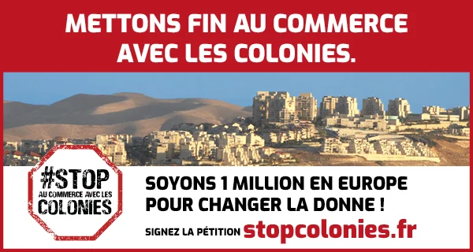

Publication d’archives
StopColonies : l’initiative citoyenne européenne pour mettre fin au commerce avec les colonies
Date indiquée par Facebook · 28 janvier 2023
Texte conservé avec la publication
Contexte du dossier
Le 28 janvier, la fédération relaie StopColonies, initiative citoyenne européenne demandant la fin du commerce avec les colonies. Elle relie colonisation, terres confisquées, eau et vie quotidienne. Après l’annonce du 27 février, un rassemblement se tient le 1er mars devant la préfecture de Niort contre le raid à Naplouse et les violences de colons. Le compte rendu demande la fin de la colonisation, la reconnaissance d’un État palestinien dans les frontières de 1967 avec Jérusalem-Est pour capitale et des sanctions économiques et diplomatiques tant que le droit international n’est pas respecté. Ces demandes précèdent la guerre d’octobre : elles inscrivent la solidarité dans un conflit d’occupation et de droits dont le corpus suit déjà les effets.

Sources
Archive rouge · export Facebook · AR-0002-FB-01771
À lire aussi · Un numéro hors-série de #LHumanité sur la guerre à #Gaza. Les clés pour comprendre. Ce numéro spécial se veut…